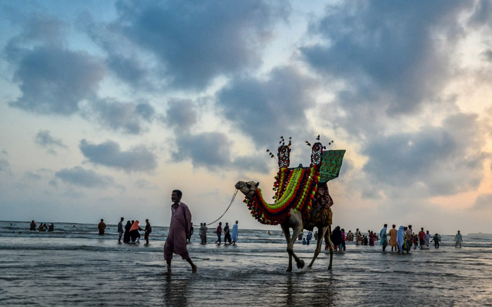

KARACHI
Karachi, the largest city of Pakistan, is known as the “City of Lights” because it is always full of energy and activity. Located along the Arabian Sea, it offers beautiful beaches like Clifton and Hawksbay where people enjoy the cool sea breeze. Karachi is a mix of many cultures, traditions, and languages, making it one of the most diverse cities in the country. The city is famous for its delicious food, from spicy biryani to mouth-watering street snacks. It is also an important center for business, education, and entertainment. Whether it’s the colorful markets, historical landmarks, or the lively nightlife, Karachi has something for everyone. No matter where you are from, Karachi’s warmth and hospitality will always make you feel at home.
PESHAWAR

Peshawar, the ancient gem of Pakistan, is one of the oldest living cities in South Asia, with a history stretching back over 2,000 years. Nestled at the mouth of the famous Khyber Pass, it has been a gateway for traders, travelers, and conquerors from Central Asia, Persia, and beyond. This city has witnessed the rise and fall of empires, from the Kushans and Mughals to the Durranis and the British. Walking through its streets is like stepping into a living museum—where the aroma of freshly baked naans and sizzling chapli kebabs drifts from small eateries, and colorful stalls display dry fruits, handicrafts, and traditional Peshawari chappals. The bustling Qissa Khwani Bazaar, once a meeting place for storytellers, still hums with life and charm. Historic landmarks like the grand Mahabat Khan Mosque, the mighty Bala Hissar Fort, and the treasure-filled Peshawar Museum remind visitors of its glorious past. Surrounded by rugged mountains and green valleys, Peshawar is not just a cultural and historical treasure but also a city of warm hospitality, where guests are treated with unmatched respect and generosity. Every corner of Peshawar has a story to tell—stories of resilience, tradition, and an unbreakable spirit that continues to shine through the ages.
FAISALABAD

Faisalabad, often known as the “Manchester of Pakistan,” is a vibrant city where tradition meets industry. Located in the heart of Punjab, it is the country’s third-largest city and a powerhouse of textile production, exporting high-quality fabrics to markets around the globe. But beyond its industrial fame, Faisalabad is rich in culture, history, and hospitality. At the heart of the city stands the iconic Clock Tower, built during the British colonial era in 1905. Surrounding it are eight bazaars, uniquely designed in the shape of the Union Jack, each specializing in different goods—from colorful fabrics and spices to traditional sweets and handicrafts. The streets are always alive with energy, filled with the sound of bargaining, the aroma of freshly cooked samosas, and the chatter of friendly shopkeepers. Faisalabad is also famous for its mouth-watering Punjabi cuisine, especially its creamy lassi, spicy channay, and tandoori roti, which perfectly capture the warmth of Punjabi culture. Beyond the bustling markets, Faisalabad is home to important educational institutions, beautiful parks like Jinnah Garden, and cultural spots where traditional music and festivals are celebrated. The people of Faisalabad are known for their hardworking nature, generosity, and warm welcome to visitors. While the city continues to grow with modern shopping malls, industries, and infrastructure, it still preserves its deep-rooted traditions and community spirit. Faisalabad is more than just an industrial hub—it is a city of dreams, resilience, and pride, representing the hardworking heart of Pakistan.
LOHORE
Lahore, often called the “Heart of Pakistan,” is a city where history, culture, and beauty come together in perfect harmony. Known as the cultural capital of the country, Lahore is famous for its vibrant traditions, warm hospitality, and rich heritage that spans centuries. Walking through the old city feels like stepping back in time—its narrow streets are filled with the aroma of spicy food, the colorful sight of traditional shops, and the echoes of centuries-old stories. The majestic Lahore Fort and the stunning Badshahi Mosque stand as grand reminders of the Mughal era, while the Shalimar Gardens reflect the beauty and elegance of the past. The city is also home to the bustling Anarkali Bazaar and Liberty Market, where shoppers can find everything from embroidered clothes to delicious street snacks. Lahore is known worldwide for its food—whether it’s the sizzling kebabs of Gawalmandi, the rich nihari, or the famous Lahori chargha, every bite is a burst of flavor. Beyond its historic charm, Lahore is a hub for education, art, and literature, housing prestigious institutions like the University of the Punjab and the Lahore Museum. The people of Lahore are known for their zest for life, love of festivals, and unmatched hospitality. The city’s famous saying, “Lahore Lahore Aye” (Lahore is Lahore), perfectly captures its unique spirit—because there is truly no other place like it. From the lively Basant festival to the peaceful evenings along the Canal, Lahore offers a blend of old-world charm and modern vibrance, making it a city that wins every heart it touches.